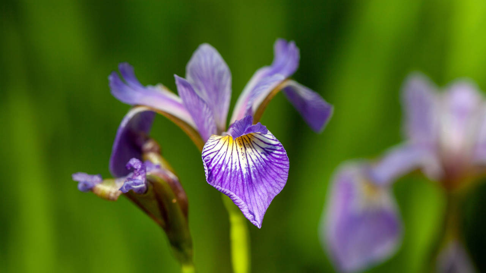

Tipos de Flores

Rosa
Las rosas son conocidas por su belleza y fragancia. Disponibles en una variedad de colores y tamaños.

Lirio
Los lirios destacan por sus elegantes flores y variedad de colores. Ideales para ramos y arreglos.
Orquídea
Las orquídeas son conocidas por sus flores exóticas y duraderas. Perfectas para decorar interiores.